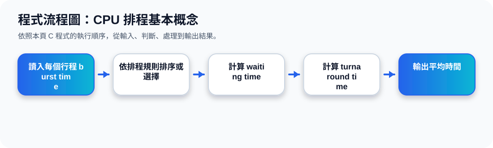

二、CPU Scheduler 是什麼？
核心觀念 CPU Scheduler，也就是 short-term scheduler，會從 ready queue 中選出一個 process，並把 CPU 分配給它執行。
Ready Queue
已經準備好、正在等待 CPU 的 process。
CPU
排程器決定誰先執行。
CPU Scheduler 動畫
三、排程演算法要看哪些標準？
投影片 49 列出 CPU scheduling 常見 criteria。這些指標用來判斷一個排程演算法好不好。
CPU utilization
CPU 越忙越好，盡量不要讓 CPU 閒置。
Throughput
單位時間內完成多少 process。
Turnaround time
一個 process 從提交到完成所花的總時間。
Waiting time
process 在 ready queue 中等待的時間。
Response time
從提出要求到第一次產生回應的時間。
四、哪些指標要越大？哪些要越小？
越大越好
CPU utilization：希望 CPU 使用率高。
Throughput：希望單位時間完成的 process 多。
越小越好
Turnaround time：希望完成時間短。
Waiting time：希望等待時間短。
Response time：希望互動回應快。
排程設計常常需要取捨。例如 response time 對 time-sharing 系統很重要；throughput 對批次處理系統很重要。
五、主題十四重點整理
CPU Scheduler 的工作不是執行程式本身，而是「決定誰可以使用 CPU」。當 ready queue 中有多個 process 時，排程器會根據排程演算法做選擇。評估演算法時，要看 CPU 是否忙碌、完成量是否高、等待時間是否短，以及使用者是否能快速得到回應。
程式流程圖與流程講解
程式流程圖：CPU 排程基本概念

流程講解
可編輯 C 程式範例與線上編輯器
可編輯 C 程式：CPU 排程基本概念
這段程式依照上方流程圖設計，包含中文註解，適合貼到線上編輯器直接執行與修改。
程式題目完整教學內容
程式題目完整教學：CPU 排程基本概念
一、程式題目講解
示範 FCFS 排程中 waiting time 與 turnaround time 的計算方式。
重點是先到先服務：後面的行程等待時間等於前面行程 burst time 的累積。
二、完整程式碼
以下程式碼可直接複製到 C 語言線上編譯器執行。程式中已加入中文註解，說明主要變數、判斷流程與輸出目的。
#include <stdio.h>
/*
主題 14：CPU 排程基本概念
功能：示範 FCFS 排程的 waiting time 與 turnaround time。
*/
int main(void) {
int burst[] = {5, 3, 8};
int waiting[3] = {0};
int turnaround[3];
int i;
for (i = 1; i < 3; i++) {
waiting[i] = waiting[i - 1] + burst[i - 1];
}
for (i = 0; i < 3; i++) {
turnaround[i] = waiting[i] + burst[i];
printf("P%d: Burst=%d, Waiting=%d, Turnaround=%d\n",
i + 1, burst[i], waiting[i], turnaround[i]);
}
return 0;
}三、程式執行結果
P1: Burst=5, Waiting=0, Turnaround=5
P2: Burst=3, Waiting=5, Turnaround=8
P3: Burst=8, Waiting=8, Turnaround=16結果說明：重點是先到先服務：後面的行程等待時間等於前面行程 burst time 的累積。 程式依照設定的資料與控制流程逐步輸出，因此可以從結果看到每個步驟的執行順序與狀態變化。
四、程式流程圖與流程圖說明
本頁上方已提供對應的程式流程圖，圖中以「開始、資料設定、條件判斷、重複處理、輸出結果、結束」呈現程式執行順序。
第一個 for 計算 waiting time，第二個 for 計算 turnaround time 並輸出每個行程的資訊。
五、重要函數與語法說明
waiting[] 儲存等待時間；turnaround[] 儲存完成週轉時間；陣列索引 i-1 用來取得前一個行程資料。
六、整體說明
本題的學習重點是把作業系統概念轉成可觀察的 C 程式流程。學生應先理解題目概念，再對照程式碼、流程圖與執行結果，掌握變數設定、條件判斷、迴圈處理與輸出結果之間的關係。